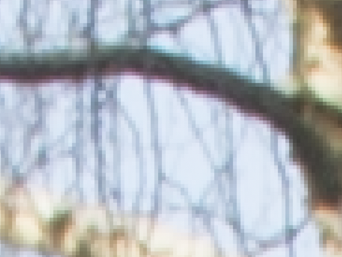
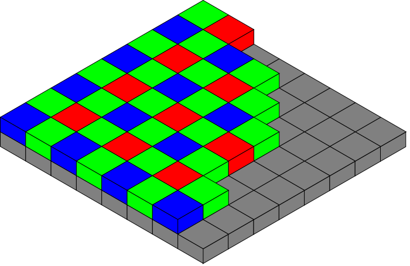
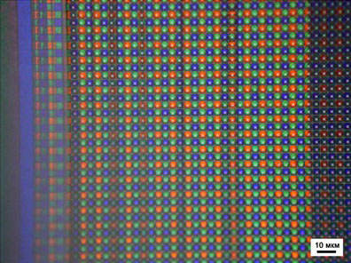
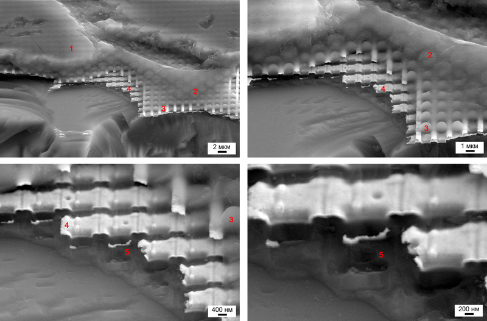
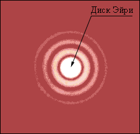
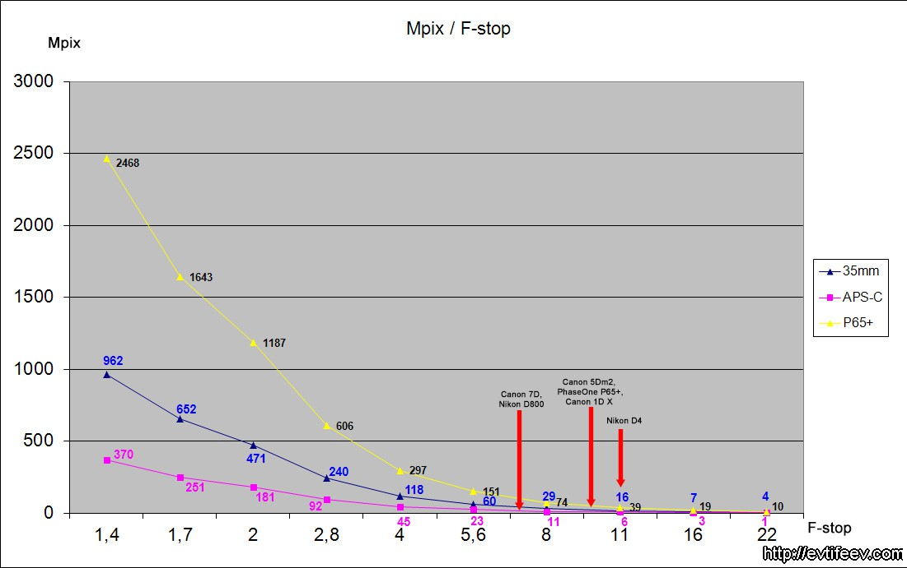
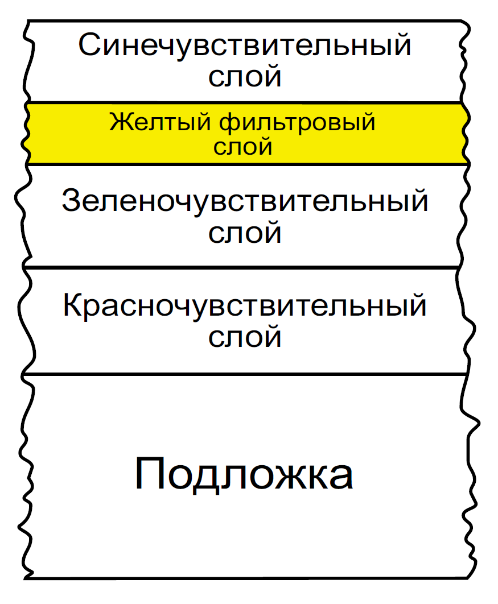
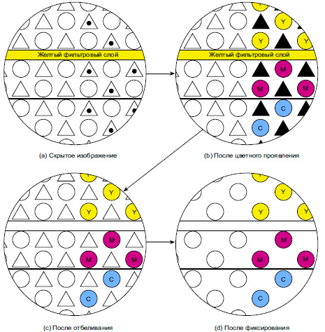
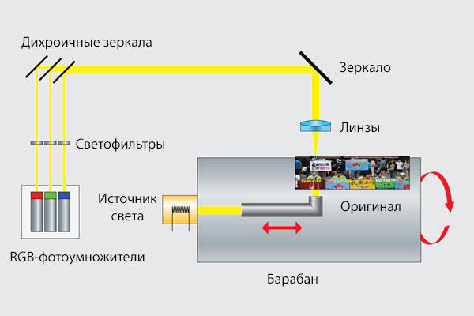

- А что? Пипл хавает! (Богдан Титомир)

В последние 20 лет в области фиксации фотографических изображений произошли кардинальные технологические изменения – большинство фотографов перешли на использование цифровых камер, основные производители практически не производят пленочных фотокамер, производство и ассортимент фотопленок уменьшились. Маркетологи ведущих производителей цифровых камер, в погоне за прибылью, воспитали целое поколение фотографов, которые никогда не видели настоящую фотографию, напечатанную оптически с негатива, без использования цифровых технологий, и уж тем более не применяли «классические» пленочные технологии в своей работе. Однако, за последние несколько лет, по утверждению компании Kodak, потребление (и, как следствие, производство) фотопленки в мире возросло. Это подтверждается планами компании по возобновлению в конце 2017 года производства слайдовой пленки Kodak Ektachrome, прекращенного в 2012 году. Появились новые марки пленок ADOX, Rollei, Lomography, Kentmere, MACO, Revolog, Аструм, и другие. Также, это отчасти подтверждается возросшими в пять раз в 2016 году продажами фотоматериалов и услуг в области пленочной фотографии Творческой лаборатории «Среда» (г. Москва). Не умоляя достоинств цифровой регистрации изображений, считаю незаслуженно малоиспользуемыми в практике фотографов технологий классической фотохимической регистрации изображений.

1. Цифровые реалии.
Рассмотрим строение типичной светочувствительной матрицы современной цифровой фотокамеры. Практически все современные матрицы строятся по схеме двумерного массива цветных фильтров, которыми накрыты фотодиоды. Самая ранняя схема светочувствительных матриц была основана на фильтре Байера (патент 1976 г.), состоящем из 25 % красных элементов, 25 % синих и 50 % зелёных элементов, расположенных как показано на рисунке (схема RGGB).
По такой схеме с небольшими непринципиальными отличиями (схемы RGBW, RGEB, CGMY) изготавливаются почти все современные матрицы.

Рассмотрим более детально устройство светочувствительной матрицы. Сверху матрица покрыта полимерным слоем (1), который защищает фоточувствительные элементы от агрессивной внешней среды. Под ним находятся микролинзы с цветными фильтрами (2 и 3). Микролинзы закреплены в ячейках вольфрамовой сетки (4), под которой находятся светочувствительные элементы (5).

Поскольку не вся поверхность матрицы закрыта микролинзами, значительная часть светового потока просто на просто не попадает на светочувствительные элементы, пропадает в промежутках между микролинзами. Примем количество света, не попадающего на светочувствительные элементы, равным 30% (хотя, как правило, этот процент выше).
Световой поток, проходя через микролинзы и цветные фильтры, регистрируется светочувствительными элементами матрицы. Каждый из элементов регистрирует мощность (яркость) определенной части видимого спектра светового потока (в соответствии с цветом фильтра, установленного перед этим светочувствительным элементом) в определенной точке проекции исходной сцены. Можно считать, что светочувствительные элементы регистрируют только треть (RGB) (на самом деле меньше – схема RGGB – два зеленых фильтра) цветовой информации светового потока.
И так, считаем: 30% светового потока пропадает, не достигая светочувствительных элементов матрицы, ещё треть цветовой информации ими не фиксируется. Остается: (100-30)/3=23,3(3)%. И это при наших благоприятных для матрицы допущениях - на самом деле, ещё меньше. Остальная информация интерполируется, рассчитывается процессором камеры. После обработки сигналов от светочувствительных элементов процессором камеры от фотографии остается только след. Поэтому, предлагаю цифровую фотографию называть правильно – фотоцифрография, или просто цифрография.
Заявляемое производителями цифровых камер количество светочувствительных элементов матриц (которое равно т.н. разрешению матрицы фотокамеры в пикселях) является общим количеством элементов, регистрирующим информацию о проекции исходной сцены. Но, фактически, матрица регистрирует, в лучшем случае, только 23,3% информации, поэтому реальное разрешение матрицы гораздо ниже заявленной.
Размер кадра одной из самых последних и продвинутых моделей цифровых фотокамер – Canon EOS 5D Mark IV составляет 6720 на 4480 пикселей (30,1 МП). Реальное разрешение (23,3%) составляет 3223х 2149 пикселей (6,9 МП). Для достаточного для комфортного визуального восприятия отпечатка пресловутого разрешения печати 300 dpi получаем максимальный размер возможной печати 27,3х18,2 см.
И так, за 40 лет своего развития, технология цифровой регистрации изображения достигла возможности напечатать «фотографию» меньше, чем 20х30 см??? И это при стоимости камеры более чем $3000! И это при том, что, реальной цветовой информации об исходной сцене даже на отпечатке такого размера уже не будет – вся информация будет интерполирована, рассчитана процессором камеры/фоторедактором/драйвером принтера.
Конечно, это утрировано, упрощенно, и с цифровых кадров печатаются вполне качественные изображения гораздо большего размера, но, давайте смотреть правде в глаза – вся информация об изображении исходной сцены цифровой камерой (графическим редактором, драйвером принтера) рассчитывается (интерполируется)!
Недостатки систем с мозаикой цветных фильтров:
- Необходимость восстанавливать часть цветовой информации приводит к потере пространственного разрешения в цветных деталях.
- Процедура восстановления порождает эффект цветного муара и цветные артефакты.
- Для снижения эффекта цветного муара применяется фильтр нижних частот (low-pass), дополнительно размывающий изображение до его попадания на матрицу. Это приводит к дополнительному снижению разрешающей способности системы в целом и снижению микроконтраста.
- Снижение резкости в алгоритме и на low-pass фильтре делает необходимым применение алгоритмов повышения резкости.

Ещё пару слов о реальном разрешении светочувствительных матриц .
Итак, у нас есть оптическая система, называемая объектив. В ней присутствует диафрагма, при прохождении которой в объективе возникает дифракция световых волн. Дифракционный предел был открыт 1873 году Эрнстом Аббе. Дифракционный предел — минимально возможный размер светового пятна, которое можно получить, фокусируя электромагнитное излучение (свет) заданной длины волны в среде с определенным показателем преломления.
В нашем случае мы получаем на матрице камеры так называемый диск Эйри.
Если светочувствительный элемент больше диска Эйри, тогда сенсор не способен использовать всё разрешение, которое предоставляет ему объектив и считается, что система ограничена разрешением матрицы.
Если светочувствительный элемент меньше диска Эйри, то дополнительного разрешения мы не получаем, а вот система становится ограниченной явлением дифракции, которая возникает в объективе.
Размер диска Эйри существенно уменьшается при открытии диафрагмы, но там вступают в силу ХА (хроматические аберрации), которые тоже существенно снижают разрешение объектива.

Красными стрелками на графике учтены частоты Найквиста (для определения одной пары линий ч/б нужно как минимум 2 пикселя) для камер Canon 5D mark II, Canon 7D, Nikon D4 и камеры PhaseOne с цифрозадником P65+ (60 Mpix).
Размеры сенсоров: 35мм: 36×24мм, APS-C: 22.3×14.9мм, P65+: 54.9×40.4mm.
Из графика видно, что в левой части на открытых диафрагмах оптическое разрешение ограничено только ХА. Сильно ограничено, насколько мы знаем. Но почти не ограничено дифракцией, так что есть возможность делать всё более резкие на открытой диафрагме объективы.
Чем правее по графику, тем сильнее падает оптическое разрешение из-за роста диаметра минимальной «точки» (диска Эйри). Чем крупнее минимальная точка, тем соответственно меньше можно вытянуть разрешения из оптики. Чем мы сильнее закрываем диафрагму, тем сильнее размывается минимальная «точка». Но при этом падают аберрации, которые на графике не учтены.
Как видите, даже потенциальное разрешение камеры с меньшим сенсором гораздо ниже.
Теоретически, на 35мм сенсоре можно «выжать» около 16 мегапикселей на F11, а на кропе 1.6х остается только 6 мпикс!
После частоты Найквиста мы теряем даже теоретическую (реальную теряем немного раньше) возможность иметь попиксельную резкость.
Для наглядности еще раз.
Закрывая диафрагму до F11 мы получаем:
Canon 7D 19 Mpix -> 6 Mpix,
Nikon D800 36 Mpix -> 16 Mpix,
Nikon D4 16 Mpix -> 16 Mpix,
Canon 5D mark II 21 Mpix ->16 Mpix,
Canon 1D X 18 Mpix -> 16 Mpix,
PhaseOne P65+ 60 Mpix -> 39 Mpix
Сделать с этим ничего нельзя, т.к. это закон природы – дифракция, и зависит он только от диаметра дырки-диафрагмы и длины волны света.
Цифровые матрицы генерируют паразитические шумы в условиях насыщенного электромагнитного поля (близость различных приемо-передающих антенн и т.п.).
Снижается документальность фотографии – все снимки обрабатываются в графическом редакторе, часто до полной неузнаваемости исходной сцены.

2. Пленочные технологии.
Разрешающая способность современных фотопленок достигает 140 лин/мм и более . В точках на мм это будет в два раза больше – 280 точек/мм, или 7 112 dpi. Получается, что кадр 24х36 мм содержит 67 737 600 точек («пикселей») или 67,7 МП. При разрешении печати 300 dpi максимальный размер отпечатка будет 56х85 см. Среднеформатный кадр 6х7 см (56х69 мм) содержит 302 МП, максимальный отпечаток - 132х163 см. Конечно, это теоретические характеристики, измеренные по определенной методике, без учета конкретной оптики, светорассеяния в камере и т.п. Но, ведь производители цифровых фотокамер, при указании разрешения матриц, тоже не учитывают эти воздействия. Также, реальное разрешение пленки зависит от конкретной марки пленки, способа и времени её хранения до и после экспонирования, режимов обработки.
В отличие от однослойных светочувствительных цифровых матриц, цветная фотопленка имеет, как минимум, три светочувствительных слоя, каждый из которых регистрирует всю информацию определенной части видимого спектра светового потока (в соответствии с участком спектра, к которой чувствителен этот слой) в каждой точке проекции исходной сцены. Краскообразующие компоненты, находящиеся в слоях фотопленки, равно, как и светочувствительные галогениды серебра, в момент фиксации проекции исходной сцены (экспонирования фотопленки), бесцветны, поэтому, пропускают световой поток дальше, к нижним слоям.
Мы знаем, что изначально фотоэмульсии чувствительны лишь к свету коротковолновой части спектра (синечувствительны) . Расширение их чувствительности до средне и длинноволновых участков достижимо только путем добавки т.н. сенсибилизирующих красителей.
Обычная, то есть несенсибилизированная эмульсия, как правило, лежит в верхнем слое и образует негатив, зарегистрировавший коротковолновые компоненты световых потоков, исходящих от объектов сцены. Понятно, что в этом случае никакого синего фильтра не требуется, поскольку эмульсия сама по себе «отвечает» только на «синий» компонент света.
Нижний эмульсионный слой фотопленки селективно сенсибилизирован к длинноволновому («красному») свету. Разумеется, красночувствительный слой сохраняет свою естественную чувствительность к свету синей части спектра, но последняя никак себя не проявляет, поскольку сразу за верхним эмульсионным слоем располагается желтый фильтровый слой. Таким образом, изображение, образованное в эмульсионном слое, фиксирует длинноволновые компоненты стимулов сцены. Мы видим, что и специальный (красный) фильтр не требуется, поскольку желтый фильтр в совокупности с длинноволновой сенсибилизацией образует исключительно красночувствительный слой.
Между желтым фильтровым и нижним красночувствительным слоями фотопленки расположена эмульсия, сенсибилизированная к свету только средних длин волн: эмульсия эта совместно с желтым фильтровым слоем образует слой, чувствительный исключительно к зеленому свету, что позволяет регистрировать средневолновый компонент стимулов сцены без использования специального зеленого фильтра. Понятно, что трехслойная пленка фиксирует сепарированные изображения одномоментно: первое за красным «фильтром», второе — за зеленым, третье — за синим. Все, что остается в этом случае, - это обработать фотоматериал по соответствующему процессу (как правило, C-41) и получить соответственно голубое, пурпурное и желтое красочные изображения.
Таким образом, весь спектр видимого света светового потока проекции исходной сцены одномоментно регистрируется в каждой точке кадра цветной фотопленки.
Рассмотрим подробнее процесс образования красочного изображение в цветной негативной фотопленке.

На рисунке показано схематичное представление сильно увеличенного разреза обработанного по негативному процессу трехслойного фотоматериала с внедренными в него краскообразующими компонентами (куплерами): треугольники обозначают кристаллы галоидного серебра (зерно): треугольники с точками — экспонированные кристаллы галоидного серебра, содержащие скрытое изображение; треугольники без точек—кристаллы неэкспонированные и, соответственно, без скрытого изображения.
На рис. (а): свет оказал воздействие на правый участок пленки, не тронув левый. По тем кругам, на которых показаны частички краскообразующих компонент, мы видим, что верхний (синечувствительный) слой способен образовывать желтый (Yellow) краситель, нижний (красночувствительный) слой — голубой (Cyan) краситель, средний (зеленочувствительный)—пурпурный (Magenta) краситель.
Цветное проявление.
При погружении фотоматериала в раствор, содержащий должное количество проявляющего вещества, проявляющее вещество восстанавливает активированное светом галоидное серебро до серебра металлического (черные треугольники), вокруг зерен которого начинается реакция сочетания оксида проявляющего вещества с краскообразующей компонентой. В результате реакции сочетания в верхнем слое фотоматериала образуется желтый краситель (Y), в нижнем слое — голубой краситель (C), и в среднем - пурпурный краситель (М). Вокруг каждого проявленного зерна красители располагаются в виде сверхмелких молекулярных либо глобулярных облаков.
Отбеливание и фиксирование.
Чтобы проявленная пленка не выглядела темной, необходимо вывести из нее неэкспонированное галоидное серебро, что в черно-белом процессе достигают путем фиксирования фотоматериала в т.н. «гипо»-растворе (растворе гипосульфита [тиосульфата] натрия); однако в цветном процессе необходимо удалить еще и самое серебряное изображение, которое наряду с галогенидом серебра будет затемнять красочное изображение. От серебряного изображения удобнее всего избавляться, окисляя восстановленное серебро в т.н. отбеливающей ванне, предваряющей фиксирование.
Таким образом, обработка фотоматериала после цветного проявления состоит в окислении серебра (восстановленного в процессе проявления) назад, к ионам серебра (рис. c), и последующем удалении (происходящем в растворе фиксажа) всех серебряных ионов из эмульсионных слоев (рис. d).
Отметим, что на стадии отбеливания обесцвечивается и желтый фильтровый слой. Поскольку незадействованные краскообразующие компоненты «по умолчанию» совершенно бесцветны, то нет ничего страшного в том, что они остаются в слоях фотопленки; более того, в негативных цветных фотопленках неиспользованные куплеры оптически активны (т.е. окрашены в желтый или розовый цвета), что служит оптимизации окончательного результата.
В результате всех описанных выше процедур в экспонированном участке пленки (рис. d) образуются все три красителя: голубой, пурпурный и желтый, и этот участок становится почти черным, а в неэкспонированном участке (левом) красители не образуются вовсе (светлая область).

3. Сканирование пленочных материалов.
Ярые противники пленочных технологий заявляют – зачем в век цифровой «фотографии» снимать на пленку, если потом все-равно все материалы оцифровываются? Теряется весь «шарм» и качество пленочных снимков. Ну, во-первых, есть возможность выполнить оптическую печать с фотопленки, полностью исключив оцифровку изображения, а, во-вторых, попробуем разобраться с технологиями сканирования прозрачных материалов.
Основное различие получения цифрового файла изображения исходной сцены цифровой камерой и пленочным сканером заключается в том, что камере необходимо выполнить «захват» изображения, как правило, за одно экспонирование, за доли секунды, за время выдержки затвора фотокамеры, в то время как пленочному сканеру торопиться некуда – изображение сцены уже «захвачено», зафиксировано на пленке в момент фотосъемки. Т.о., у сканера есть возможность зарегистрировать изображение не одновременно тремя элементами светочувствительного сенсора, чувствительными к разным областям видимого спектра и находящимися в одной плоскости, а, например, тремя сенсорами RGB после разделения светового потока, как в барабанных сканерах, или, поочередно освещая пленку тремя светодиодами RGB, как это делается в сканерах Nikon CoolScan. Это исключает неполное считывание цветовой информации с проекции исходной сцены, как в случае с однослойной цифровой матрицей. Т.е., получение цифрового изображения цифровой камерой и пленочным сканером принципиально различается.
4. Про цветопередачу.
Весь 20 век лучшие умы (инженеры, ученые) (прежде всего лабораторий фирмы Kodak) изучали цветовоспроизведение, цветовосприятие, изобретая все лучшие и лучшие цветные фотографические эмульсии. Добивались того, чтобы снимки выглядели визуально привлекательными для человеческого глаза. Не знаю, как вы, а я точно не строю иллюзий по поводу того, что, используя графический редактор, смогу привести кадр хотя бы близко к тому, чего добились создатели фотопленок.
Вы можете возразить – а зачем нам приводить снимки к «пленочному» виду? Нас вполне устраивает цифровой «стандарт» цветопередачи. А не кажется ли вам, что этот «стандарт» навязан нам производителями цифровых камер из-за невозможности воспроизвести то, что до них было изучено, обосновано, создано производителями фотопленок?